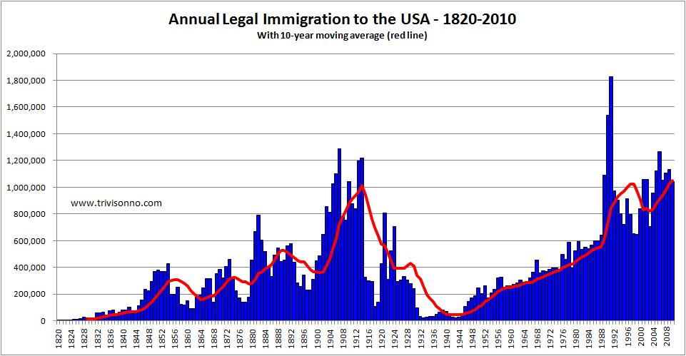

Lab 3: Baby Names sample solutions

Data Downloads:
For this lab, you will need to download and unzip the following file.
Data Description
The data set is a zipped folder of .csv text files that contains the Census Bureau counts of names of baby boys and girls born each year from 1880 to 2014. These data include any name-gender combination for which there were at least five babies born in that year. There is a separate text file for each year from 1880 to 2014. For example, the file named yob1942.txt contains the counts of names for all boy and girl babies born in 1942.
Each row in a text file is of the format [name, gender, count]. For instance, some sample lines in the text file yob1942.text might be
- Mary, F, 7312
- John, M, 6400
The first line would indicate that 7,312 girls born in 1942 were given the name Mary. This lab asks you to use these data, along with R, to analyze how naming patterns in America have changed over the last 150 years. Remember to keep all of your work in R-scripts and to save frequently!
NOTE: Many of the steps below can be combined, but I have tried to write them out to make them more clear, and I have tried to rely only on “core” R functions, which is what we have covered so far in class. There are also multiple ways to complete most of these objectives. Feel free to experiment with others.
Objective 1. Load the data files into an R data frame
-
Before you begin: Although the data are available from 1880 to 2014, it may take a long time for your laptop to load in the data for all of these years! I recommend starting with a more recent window – say, from 1970 to 2014, or if that still takes more than a few minutes, an even more recent window. However, those of you with more powerful laptops may be able to handle the entire data set, and I have made all of the files available because it is interesting to see how baby naming patterns in the US were different before the numerous waves of immigration that changed US demographics during the twentieth century.
-
The data must first be read into a data frame in RStudio. The most efficient way to do this is to use a
forloop to loop through all of the text files in the folder, read each into RStudio, and as you read each of them in, add them to a data frame. This is easiest if executed and tested in a series of steps (this code is provided for you below).-
After downloading and unzipping the Census Bureau files, set your working directory to the folder where you have downloaded these files and use the
read.csv()command to try reading a single .csv file into RStudio and assigning it to an object name. Check that it works as expected by examining the created object in RStudio. -
Create a data frame called babynames and set it to NULL.
-
babynames = NULL
-
Create a vector containing the numbers 1880 through 2014 (or whichever years you have chosen), which are the years that you will need to loop through to read all of the files in the folder.
-
Create a
forloop that iterates through the values in the year vector from 1880 to 2014. -
Put the
read.csv()command into theforloop. Use text string concatenation to create an appropriate file name to pass to theread.csv()command in each iteration of the loop. -
The contents of each read.csv() command should be passed to a temporary data frame. To this temporary data frame, you should add a new column that contains the year of the file from which the data is drawn from (for all rows in the data frame). Then, $rbind$ the temporary data frame containing only the contents of the most recent file + the new column with the year of that file to the data frame babynames which contains the running total contents of all the files you have read up until that point.
-
After the for loop is created, babynames should contain the data from all files, and each row should have an additional column containing the year of the file that the data came from. If you are using all the years from 1880 to 2014, you should end up with 1,825,433 rows. After you have completed the steps above, assign sensible column names to your data frame using the
namescommand in R. -
NOTE: If you have never written a
forloop before, or are new programming, this first step can easily take the entire first class day (and yet only produce a few lines of code), and that is okay! It is worth spending time on this to understand how it is working, and after this step is completed, the rest of the lab goes more quickly.
# To get you started quickly, I have provided the initial code to load in the files. If this works, you can begin with Objective 2. # Set your working directory to the folder where the name files are located. setwd("data") babynames = NULL # For loop to read in the file and append it to a running total dataframe babynames for (year in (1950:2014)) { foo = read.csv(paste("yob", toString(year), ".txt", sep=''), header=FALSE) babynames = rbind(babynames, cbind(foo, year)) }
# After the data frame has been created (and you have checked it to make sure it is correct), provide it with sensible column names using the `names` command. See `help(names)` for more information on how that works. In this case, the data frame has four columns, so you will need to pass it a column vector of four text strings to name the four columns. names(babynames) = c("name", "gender", "count", "year")
Objective 2. Plot how the popularity of your own name has been changing over the years
You should now have available in your RStudio environment a data frame containing the counts of all name-gender combinations in each year from your beginning start year to 2014.
-
Plot how the number of people in the data set that share your name and your gender varies from year to year. If your name does not appear in the data, use the name of a lab partner (or choose your favorite)!
-
To complete this objective, first create a new data frame myname that contains only the rows from babynames that match both your name and gender (use the
whichcommand in R to do this). Then, from myname, plot counts against years for the data, and don’t forget to label the axes and give a sensible title to your plot.
# Create a data frame _mynames_ which only keeps rows in _babynames_ that match your name and gender. Note the use of the '&' which is how to do 'and' in R. There are syntactically shorter ways to do this in R, which we can try later in the semester. mynames = babynames[which(babynames$name=="Ishmael" & babynames$gender=="M"),]
# Use the `plot` command to plot counts vs. year, label the axes, and give it a title. plot(mynames$year, mynames$count, xlab="Year", ylab="Counts", main="How the popularity of my name has changed")

Objective 3. Visualize the growth in unique girl names from 1880-2014
Create a plot of the number of unique baby girl names in each year from 1880 to 2014.
- First, create a data frame with only baby girl names for each year.
- The
tablecommand is a useful way to compute the number of entries for each year in your data frame. - Plot the results.
It may be interesting to compare the results with the following image.

# Create a data frame that only contains girl names. female = babynames[which(babynames$gender=="F"),] # Generate counts of the number of rows for each year that appears in the data frame. A fast way to do this is to use the `table` command which does exactly this - it creates counts by year (or whatever other dimension you choose). girlnamecount = as.data.frame(table(female$year)) # Plot the number of unique names by year. names(girlnamecount) = c("year", "namecounts") plot(girlnamecount$year, girlnamecount$namecounts, xlab="Year", ylab="Number of unique girl names", main="Growth in number of unique girl names by year")

Objective 4. Write a function to generate the most popular baby names for a given gender and year
Write a function toptennames that takes two arguments, gender and year, and returns the top ten unique names for that gender in that year. This function should:
- Create a new data frame
ttncontaining only rows that match on gender and year. - Use the
ordercommand to reorder \textit{ttn} so that it is decreasing by counts. - Return the top 10 rows of the reordered data frame.
After running your function, test it by calling:\
print(toptennames(1880, "F"))
print(toptennames(2014, "F"))
# Create a function takes two arguments, the year and gender. The function should use the values passed to this function to create a data frame _foo_ that only contains rows of that gender and year. Order the resulting data frame by count, and then return only the top 10 rows. toptennames <- function(year, gender) { foo = babynames[which(babynames$gender==gender & babynames$year==year),] top_names = foo[order(foo$count, decreasing=TRUE),] return(top_names[(1:10),]) } # Remember to run the function in your R-script before calling it, or it will not be recognized in the R environment. # Test your function by calling it to make sure it does what you think it should do! The function should return a data frame of 10 names, so it can be printed directly. You could also have assigned it to a new R object (e.g. `a = toptennames("2012", "F")`) and then called `print(a)`. print(toptennames("2012", "F"))
## name gender count year ## 1263582 Sophia F 22267 2012 ## 1263583 Emma F 20902 2012 ## 1263584 Isabella F 19058 2012 ## 1263585 Olivia F 17277 2012 ## 1263586 Ava F 15512 2012 ## 1263587 Emily F 13619 2012 ## 1263588 Abigail F 12662 2012 ## 1263589 Mia F 11998 2012 ## 1263590 Madison F 11374 2012 ## 1263591 Elizabeth F 9674 2012
print(toptennames("2014", "F"))
## name gender count year ## 1330469 Emma F 20799 2014 ## 1330470 Olivia F 19674 2014 ## 1330471 Sophia F 18490 2014 ## 1330472 Isabella F 16950 2014 ## 1330473 Ava F 15586 2014 ## 1330474 Mia F 13442 2014 ## 1330475 Emily F 12562 2014 ## 1330476 Abigail F 11985 2014 ## 1330477 Madison F 10247 2014 ## 1330478 Charlotte F 10048 2014
Objective 5. Compute the most gender-neutral names
Generate a list of the ten names that, in 2014, were relatively popular for both baby boys and baby girls. To do this, use the following condition: for names for which there are at least 1000 people in the year with that name (including boys or girls), compute the difference between boys and girls with the name. Then, we will call those names with the smallest magnitude difference between the two the most “gender neutral” names. This is not the best definition of gender-neutral, but it is a definition and is straightforward to implement.
To complete this objective:
- Keep only rows from 2014.
- Create a data frame male with only boy names and their counts.
- Create a separate data frame female with only girl names and their counts.
- Merge the two data frames on name.
- Keep only those rows where the sum of counts for boys and girls is at least 1000.
- Compute the absolute value of the difference between counts of boys with the name and counts of girls with the name.
- Use
sortororderto sort the data frame by the absolute value you just computed. - Use
headto find the top ten gender neutral names.
# Create separate data frames that contain male and female names, merge them, and drop rows that do not have at least 1000 names. male = babynames[which(babynames$gender=="M" & babynames$year==2014),] female = babynames[which(babynames$gender=="F" & babynames$year==2014),] mf = merge(male, female, by=c("name", "year"), suffixes=c(".m", ".f")) mf = mf[which((mf$count.m + mf$count.f)>=1000),] # Take the absolute value of the difference, sort, and show ten with smallest absolute difference. mf$diff = abs(mf$count.m - mf$count.f) head(mf[order(mf$diff),], 10)
name year gender.m count.m gender.f count.f diff 2184 Skyler 2014 M 911 F 1070 159 514 Charlie 2014 M 1670 F 1432 238 1217 Justice 2014 M 518 F 756 238 605 Dakota 2014 M 876 F 1136 260 1902 Phoenix 2014 M 901 F 629 272 1740 Milan 2014 M 748 F 424 324 2258 Tatum 2014 M 462 F 828 366 109 Amari 2014 M 970 F 585 385 2048 Rory 2014 M 741 F 326 415 2095 Sage 2014 M 399 F 834 435